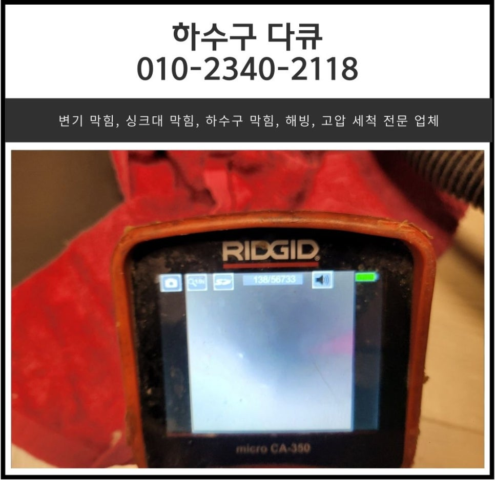
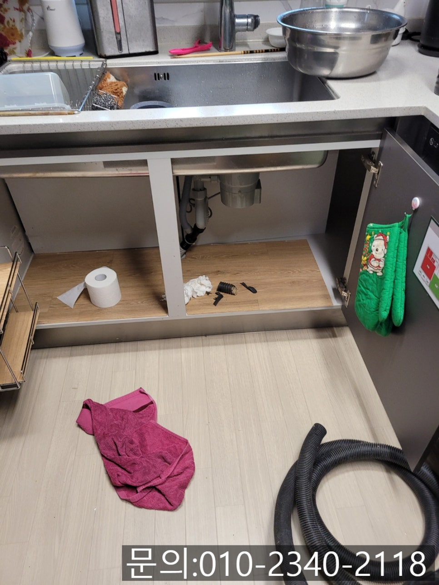
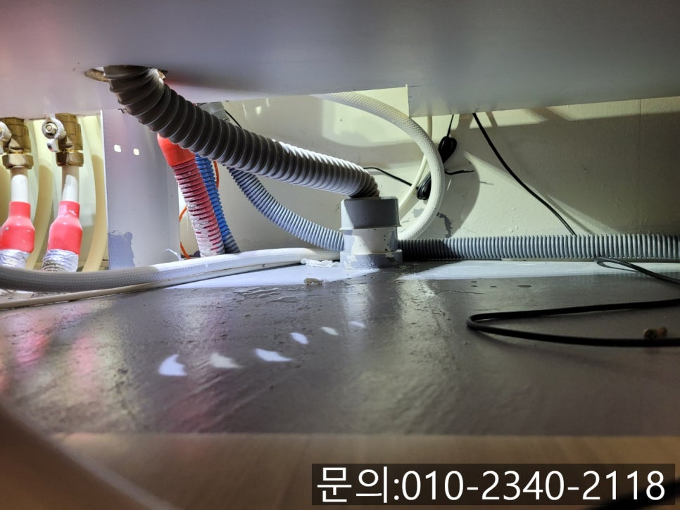
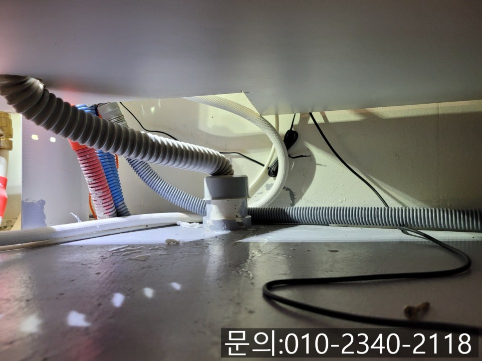
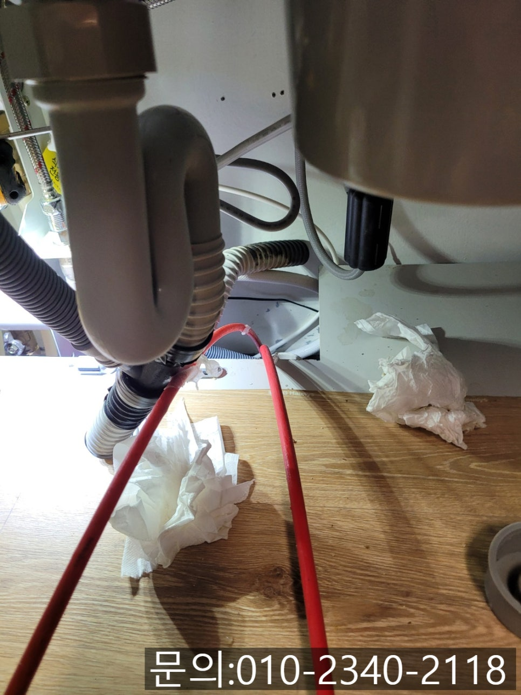
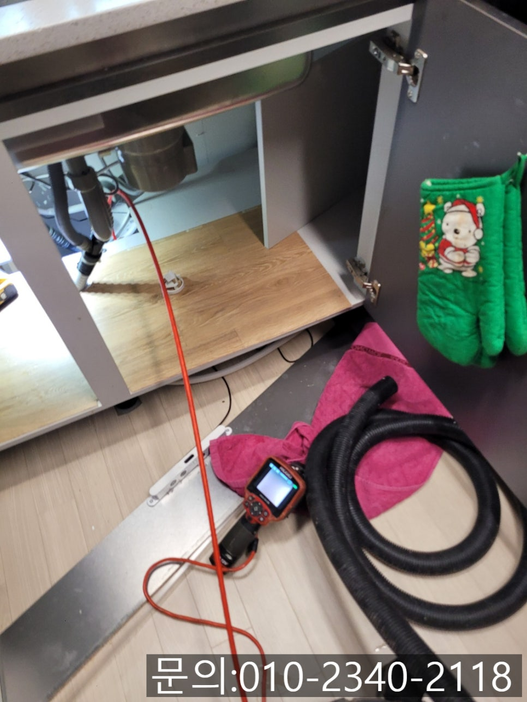
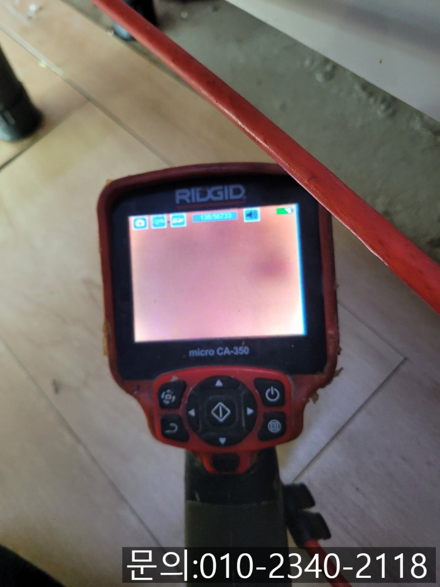

🏠 갈곶동 하수구 막힘 오산 탑동 아파트 싱크대 물 넘침 전문 설비업체
오산 갈곶동 싱크대막힘 전문 시공 후기

📋 작업 개요
- 위치: 오산 갈곶동, 갈곶동, 오산
- 서비스 유형: 싱크대막힘, 하수구막힘, 배관막힘, 역류해결, 뚫는업체, 고압세척
- 작업 일시: 2025. 2. 16. 19:09
- 업체명: 하수구수사대 (010-5615-2118)
🔍 문제 상황
안녕하세요.
갈곶동 하수구 막힘, 오산 탑동 아파트 싱크대 물 넘침 전문 설비 업체 하수구 다큐입니다.
오늘은 갈곶동 하수구 막힘으로 연락을 받고 방문해 해결해 드리고 온 현장을 소개해 드릴게요.
고객님의 전화를 받고 갈곶동 하수구 막힘이 어느 정도 상황인지 여쭤보니, 싱크대에서 물을 사용하면 배수되는 속도가 심각하게 느려진 상태라고 말씀하셨어요.
사용한 물이 천천히 흘러내려 가기는 하지만 시간이 많이 걸릴 뿐 아니라 물만 흘러가고 세제 거품은 그대로 남아있다 보니 다시 물을 뿌려 씻어내야 하는 상황이라고 말씀해 주셨습니다.
고객님께서 편한 시간에 맞춰 방문해 드리기로 약속을 잡고 다른 현장에서 작업을 하고 있는데 고객님께 다시 전화가 왔어요.
식사를 마치고 그릇을 세척하고 있는데 물이 흘러내려 가지 않고 거꾸로 역류하기 시작했다며 빨리 와달라고 말씀해 주셨습니다.

🔎 원인 분석
💡 전문가 진단: 정밀 진단 장비를 사용하여 슬러지의 고착 여부를 판명하고 타격/세척 작업을 실시했습니다.
다행스럽게도 다른 현장이 마무리 중이었던 터라 신속하게 장비를 챙겨 현장으로 달려갔어요.
감사하게도 하수구 다큐가 작업할 때 불편할까 봐 그릇들은 화장실에서 닦아주고 싱크대도 최대한 깔끔하게 정리해 두신 상태로 오산 탑동 아파트 싱크대 물 넘침 전문 설비 업체 하수구 다큐는 바로 장비를 준비해 작업을 진행할 수 있었습니다.
오산 탑동 아파트 싱크대 현장을 점검해 보니 다행히 배관에서는 물이 역류하지는 않고 있었어요.
하지만 조금 더 지체하게 되면 역류할 수 있어 빠른 조치가 필요해 보였습니다.
고객님께서 자세히 설명은 해주셨지만 어떤 이유로 싱크대 막힘이 발생한 건지 물을 틀어 배수되는 모습을 직접 확인해 본 다음 주름 호스를 분리해 내시경 카메라를 배관 내부로 진입시켜 직접 확인해 봤습니다.
오산 탑동 아파트 싱크대 물 넘침 전문 설비업체 하수구 다큐는 어떤 현장을 가더라도 내시경 카메라를 이용해 배수구 내부에 넣고 배관의 구조나 하수구 막힘의 상태를 확인하는 작업을 하고 있어요.
배수구가 다 똑같을 것 같지만 현장마다 구조와 모양도 다르고, 막힘의 원인도 다르다 보니 정확히 확인한 다음 작업 방향을 결정하고 있습니다.

🔧 작업 과정
대부분 아파트 싱크대 물 넘침 현장의 경우 기름 슬러지나 음식물 찌꺼기로 인해 막히지만 간혹 고객님들도 모르는 사이 비닐 랩이나 이쑤시개 등이 배수구에 빠져 막힘이 발생할 수도 있어 확인 작업은 필수 입니다!
내시경 카메라로 확인해 보니 기름 슬러지로 가득 차 있는 것을 확인할 수 있었습니다.
특별히 다른 이물질이 빠진 것 같아 보이지 않은 상태로 석션을 사용해 배수구에 고여있는 물을 제거하는 작업부터 진행했어요.
석션을 사용해 고여있는 물과 기름 슬러지를 빨아들여 제거했지만 기름 슬러지가 전부 제거되지 않고 많이 남아있어 다른 장비를 사용한 작업이 필요했어요.
플렉스 샤프트 장비를 이용해 배관을 막고 있는 기름 슬러지를 제거하기로 했는데요.
플렉스 샤프트 장비는 배관 내부에 진입시켜 강하게 회전시키면서 내부를 막고 있는 기름 슬러지를 타격해 제거해 주는 전문적인 장비입니다.
본체에 연결되어 있는 전동드릴을 작동시키는 힘을 전달받아 배관 내부에서 회전하다 보니 소음이 발생하는데요.
고객님께서 소음이 크다 보니 배관에 손상이 가는 건 아닌지 걱정을 하셨습니다.
하지만 플렉스 샤프트 장비의 경우 드릴의 회전하는 힘을 전달받는 거지 드릴로 직접 작업하는 게 아니다 보니 소음은 발생하지만 배관에 손상을 주지 않는다고 자세히 설명해 드린 다음 작업을 진행해나갔어요.
한참을 반복해서 작업을 진행하자 오산 탑동 아파트 싱크대 물 넘침이 있었던 현장이 맞는지 믿기지 않을 정도로 깨끗해진 배관 내부를 확인할 수 있었습니다.
배관이 깨끗해진 것을 눈으로 확인했지만 물을 사용했을 때 다른 문제가 발생할 수도 있기 때문에 많은 양의 물을 한꺼번에 흘려보내며 역류나 막힘은 없는지 확실하게 테스트까지 진행하고 작업을 마칠 수 있었어요.
고객님께서는 예약시간보다 빨리 방문해서 시원하게 뚫어줘서 고맙다고 커피까지 챙겨주셔서 기분 좋았던 현장이었습니다.


✅ 작업 완료
지금 싱크대에서 물이 잘 내려가지 않아 신경 쓰이시나요?
오산 탑동 아파트 싱크대 물 넘침 전문 설비업체 하수구 다큐와 함께 해결해 보세요!
경기도 용인시 수지구 수지로342번길 32 5층 508호 에이치01




⚠️ 주방 싱크대 배관 막힘 예방 수칙
- ✅ 기름기가 묻은 식기나 프라이팬은 설거지 전 키친타올로 반드시 기름때를 닦아내세요.
- ✅ 주기적으로 싱크대 개수대에 뜨거운 물을 가득 받아 한 번에 내려 배관 내부 기름을 씻어내세요.
- ✅ 배수구 거름망을 미세한 필터로 사용하시고 음식물 찌꺼기가 틈으로 새어 들지 않게 관리하세요.
- ✅ 베이킹소다와 식초를 뜨거운 물과 함께 일주일에 한 번씩 부어주면 배관 살균과 막힘 예방에 좋습니다.
💡 핵심 정리
- 확실한 장비 작업(내시경 점검 및 샤프트 스케일링)으로 원인을 뿌리 뽑습니다.
- 작업 후 1년 이내에 동일한 부위 재발 시 100% 무상 A/S 서비스를 보장합니다.
- 서울 · 경기 · 인천 전 지역에 24시간 언제든 긴급 출동할 수 있도록 항시 대기 중입니다.
❓ 자주 묻는 질문 (FAQ)
🚨 오산 갈곶동 싱크대막힘 문제로 고민이신가요?
정확한 원인 진단과 확실한 시공으로 재발 없는 해결을 약속드립니다.
24시간 긴급 출동 | 서울 · 경기 · 인천 전지역 | 1년 내 재발 시 무상 A/S